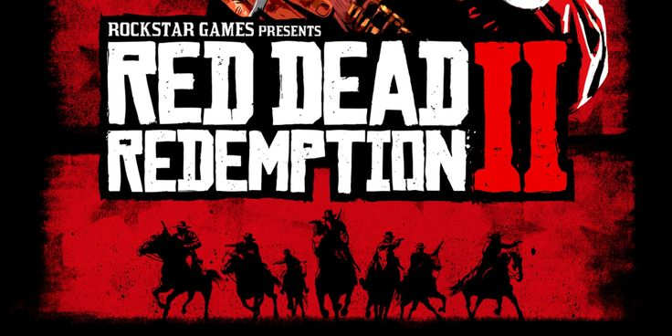

Історія Артура Моргана
Артур Моргана проходить складний шлях переосмислення своїх вчинків і поступово починає по-іношому дивитись на життя людей навколо себе.
Я люблю цю гру через дуже сильну драматичну історію та добре прописаних персонажів. Особливо мені подобається історія спокути головного героя Артура Моргана
Також у грі є Система честі, яка показує наслідки вчинків героя та напряму впливає на сюжет. Для мене це робить історію більш живою та змістовною.
Red Dead Redemption 2 особлива тим, що поєднує сильну драматичну історію,
систему честі та величезний відкритий світ.
Майже кожна деталь працює на атмосферу: поведінка NPC, зміна погоди,
догляд за конем, полювання, випадкові зустрічі та реакція світу на вчинки Артура.
Артур Моргана проходить складний шлях переосмислення своїх вчинків і поступово починає по-іношому дивитись на життя людей навколо себе.
